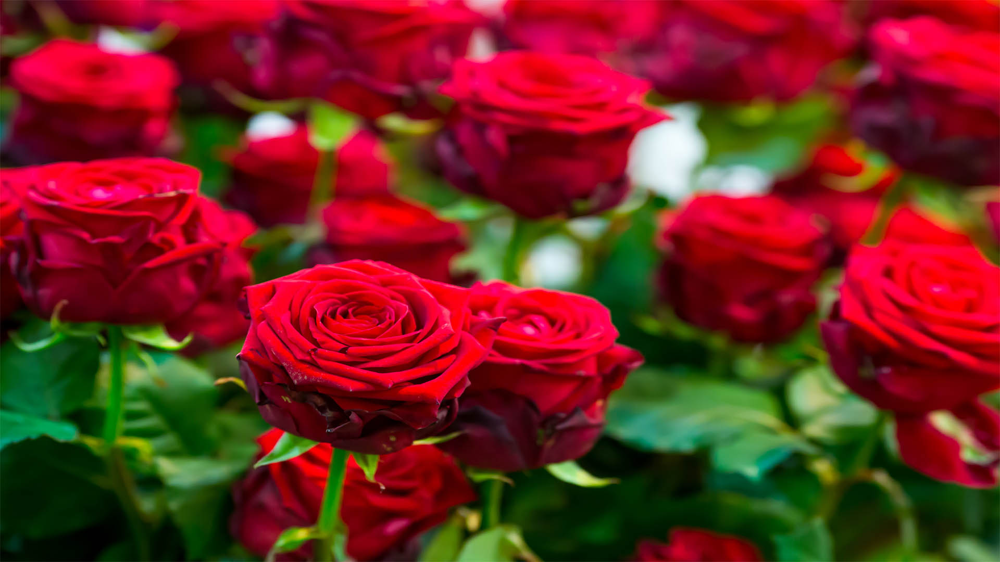
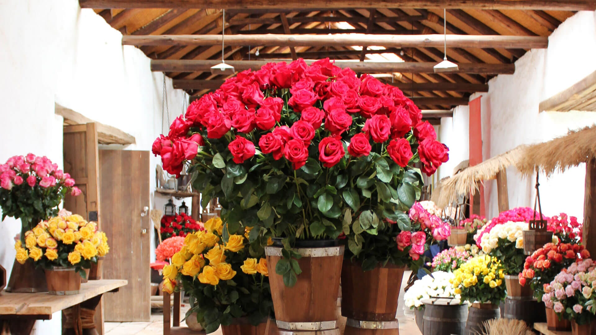
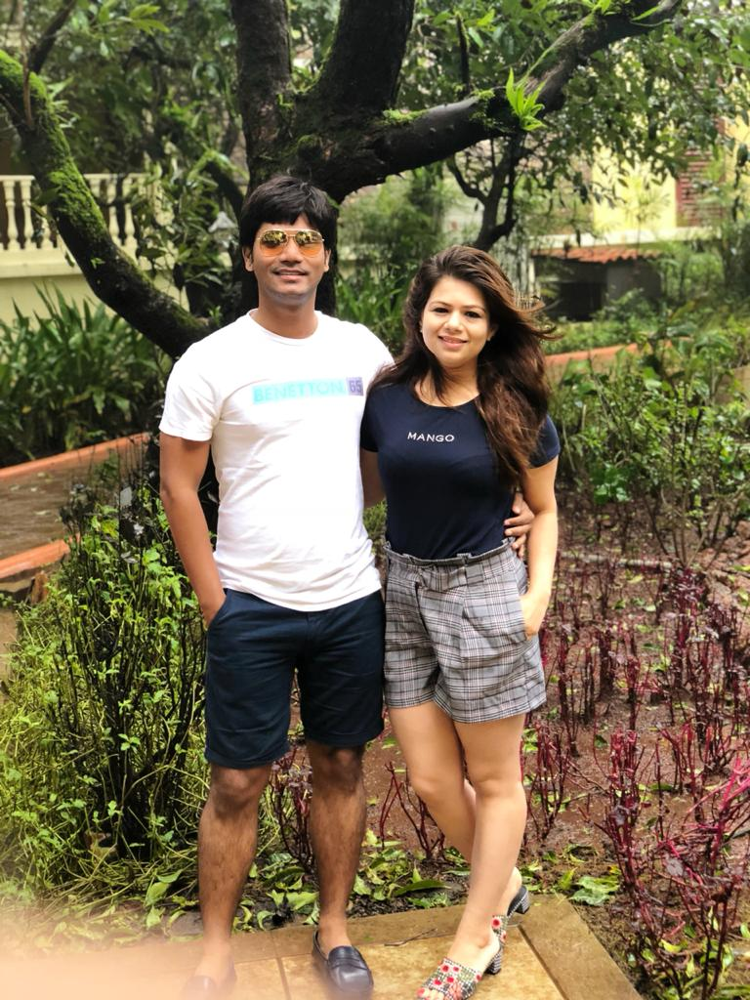

Shanaya Flower Farm is a local organic flower farm located in Telegoan village near Pune, Maharashtra. Founded in 2016 by Supriya Mule with the much-appreciated help of her husband Sujit. Supriya uses nature’s beauty with a whimsical style as her inspiration. Not knowing what would come of this endeavor she started with her love of growing beautiful blooms which lead to her passion of creating bouquets that bring smiles for all.


Meet The Farmer

Supriya is Architect and Interior Designer by professional. She is passionate designer and fashionista. She is inspiried by her Mother and mother-in-law to convert her hobby into Shanaya Flower Farm. Her daughter, Shanaya, enkindled the name the name of the venture, who is as bright, joyful and kind as flowers.